Lab diagram¶
Version 0.5.4 · draft · 2026-10-16 · class/demos/lab-diagram.md
One booking reserves three environments together: a vSphere landing zone (lzN) and two OpenShift clusters
(ocp-lzX = site A, ocp-lzY = site B). They all run as VMs on the same four physical hosts
(demosvr01-04), each zone on its own VLAN. The numbers come from your booking (the instructor gives them out) and change from
booking to booking. How each piece was built, from the CLI and in the console: Lab S.

Diagram source (Mermaid). The SVG above is rendered from this; edit here, then re-render.
flowchart TB
STU(["👩🎓 Students: a web browser only<br/>(vSphere Client, both consoles, their browser terminal)<br/>one identity (SSO), one password everywhere"])
subgraph VS["① vSphere · lzN · VLAN 22+N"]
direction LR
VC["vCenter vcenter0N<br/>4 × nested ESXi"]
VMI["vms/ovedr<br/>win-pg-i01 (instructor) · .62"]
VMS["vms/students/<class ID><br/>win-pg-sNN (one per student) · .100+NN<br/>Windows 2022 + PostgreSQL 16<br/>C: OS · L: WAL · D: data"]
DS[("NFS datastore coresan01_data00<br/>folders ovedr-lzN-*")]
VC --- VMI --- VMS --- DS
end
subgraph A["② Site A · OpenShift ocp-lzX"]
direction LR
A1["OpenShift Virtualization · ACM · cert-manager<br/>bridge → NAD vmnet(22+N)"]
A2["MTV + console menu<br/>providers ovedr-vcenter0N · ovedr-ocp-lzY<br/>staged plans d1-<vm> cold · d2-<vm> warm (not started)"]
A3[("ODF (1 scratch SSD per host)<br/>ceph-rbd-virtualization · nfs-csi")]
A4["one namespace per student (admin)<br/>with their browser terminal sql-client<br/>+ ovedr-app"]
A1 --- A2 --- A3 --- A4
end
subgraph B["③ Site B · OpenShift ocp-lzY"]
direction LR
B1["OpenShift Virtualization · ACM · cert-manager<br/>the same bridges / NADs"]
B2["MTV + console menu<br/>providers ovedr-vcenter0N · ovedr-ocp-lzX<br/>staged plans d1-<vm> cold · d2-<vm> warm (not started; demos use site A's)"]
B3[("ODF (the second SSD per host)<br/>ceph-rbd-virtualization · nfs-csi")]
B4["one namespace per student (admin)<br/>with their browser terminal sql-client<br/>+ ovedr-app"]
B1 --- B2 --- B3 --- B4
end
STU --> VS
STU --> A
STU --> B
VS == "Demo 1 cold · Demo 2 warm (CBT)<br/>each VM keeps its own address (bridge map)" ==> A
A == "Demo 1c cross-cluster OVE → OVE<br/>ODF → NFS storage migration" ==> B
A -. "Demo 4 ODF Regional-DR · RBD mirror every 15 min<br/>(needs ODF on both sites)" .-> B
B -. "ACM hub manages site A (BL-D11)" .-> AShared underneath all three: the four physical hosts demosvr01-04 (two scratch SSDs each since 2026-10-15: one
per site's ODF), lab DNS (dns01/dns02), the NFS export coresan01_data00 (shared by every vSphere zone,
so every class VM's folder carries its zone: ovedr-lzN-<vm>), and core-sso, which provisions the same roster and
password to vCenter, both clusters and the Windows VMs.
What runs where¶
vSphere lzN |
Site A ocp-lzX |
Site B ocp-lzY |
|
|---|---|---|---|
| Built by | demo-vmware (core-web dispatches) | demo-openshift (ove: cnv, storage: odf, ACM, cert-manager) |
demo-openshift (ove: cnv, storage: odf, ACM, cert-manager) |
| Customized by this demo | the instructor's win-pg-i01 (vms/ovedr, .62) and one full clone per student win-pg-sNN in that student's own folder vms/students/<class ID> (.100+NN), each with PostgreSQL (WAL on L:, data on D:), the toolkit, Windows logins and WinRM; each student may power, open the console, Edit Settings (CBT) and snapshot their own VM |
MTV with its console menu, providers + maps, staged plans d1-<vm> (cold) and d2-<vm> (warm) per class VM (not started) landing each student's VM in that student's own namespace (their class ID, where they are admin), ovedr-app with sql-client and the instructor's VM, a Service per VM, the demo prep (pre-copy interval, snapshot class) |
the same as A without staged plans (Demo 1c builds its own from site A), plus the ACM hub role and DR (Demo 4) |
| Storage | NFS datastore coresan01_data00; on a vmware_storage: vsan booking the class VMs sit on vSAN (one scratch SSD per host as cache); on local, each on its own host's SSD datastore esxi-lzN-NN-vmfs00 (student NN → host NN, wrapping after 4) |
ODF on one scratch SSD per host (ocs-storagecluster-ceph-rbd-virtualization, the VM default), plus nfs-csi |
the same: ODF on the second SSD per host, plus nfs-csi |
| Network | port group vm-network, VLAN 22+N; every class VM its own static address |
NMState bridge onto VLAN 22+N (vmnet<VLAN>), plus the pod network |
the same VLAN bridges, plus the pod network |
| Demos | 1, 2 (source) | 1, 2 (target) · 1c (source) · 4 (primary) | 1c (target) · 4 (DR site, hub) |
The operators are the same on both clusters, storage included: ODF on both sites is the lab standard
(storage: odf), which is what lets Demo 4 mirror between them. A booking can still choose odf-site-a (ODF on site A
only, site B on nfs-csi, no Demo 4) or na. The customize healthcheck reports any other difference.